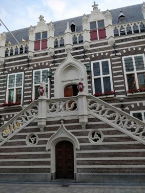
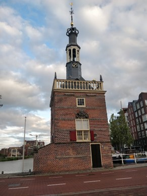

In het westelijk deel van deze wandeling zijn een aantal punten van interesse te vinden:
De Sint-Laurenskerk, Het stadhuis, de oudegracht.
De Sint-Laurenskerk is een kerk op de koorstraat 2, het bouwen van deze kerk vond plaats
tussen 1470 en 1518 en was vroeger het belangrijkste gebouw in Alkmaar. Tegenwoordig
heeft de kerk geen religieus nut meer en is er in een museum over de historie van het
gebouw te vinden. De Oudegracht is één van de vele grachten die door en rond
Alkmaar lopen. Het nut van deze grachten was vooral voor de handel van allerlei
producten. Daarom zal je dus ook veel oude pakhuizen kunnen zien die langs de
grachten staan. Het stadhuis is het oude stadhuis van Alkmaar, het was tussen
1509 en 1520 gebouwd. Een groot deel van het gebouw ging 8 jaar nadat het gebouwd
was in vlammen op. Op 10 december 1969 is het opgenomen als rijksmonument.

Zuidoostelijk deel
In het Zuidoostelijk deel is onder andere nog een kerk te vinden; de kapelkerk.
Ook staat hier de accijnstoren, de functie van dit gebouw was vroeger een soort
belastingkantoor. Hier moesten ingevoerde goederen aangegeven worden ‘accijns’
is een soort van indirecte belasting (BTW is een ander voorbeeld van indirecte belasting).
Wanneer kooplieden langs de accijnstoren gekomen werden konden ze verder naar,
Luttik Ouddorp, de Laat en de Mient, Wat na uitbreiding in de 13e eeuw het hoofdpunt
van alle handel werdt, op het Waagplein werden ook veel jaarmarkten georganiseerd.
Een markt die al meer dan 4 eeuwen oud is.

Noordoostelijk deel
In de Noordoostelijke hoek langs het Noordhollandsch Kanaal is het victoriepark te
vinden. Het park is in 1822 aangelegd in de Engelse landshapsstijl. In 1876 was
hier ook het victoriemonument gebouwd, ook staan er een aantal oude kanonnen.
In de Tachtigjarige Oorlog werd Alkmaar belegerd door het Leger van Vlaanderen (
de Spanjaarden). Het beleg duurde van 21 augustus tot 8 oktober, Alkmaars ontzet
wordt tot op het heden gevierd op 8 oktober. De Alkmaarders hielden de Spanjaarden
met kokend teer en brandende takken op afstand, ook vrouwen vochten mee tijdens de
belegering waaronder Trijn Rembrands ook wel de Kenau van Alkmaar genoemd die
bekend was geworden door haar heldhaftigheid tijdens de belegering. Het Spaanse
leger was gedwongen het beleg opgegeven nadat Willem van Oranje de opdracht het gegeven de dijken rond Alkmaar door te steken. Het gevolg hiervan was dat de Spanjaarden vast kwamen te zitten in de modder. Na 8 oktober was er geen Spaanse soldaat meer te zien in Alkmaar en was het dus